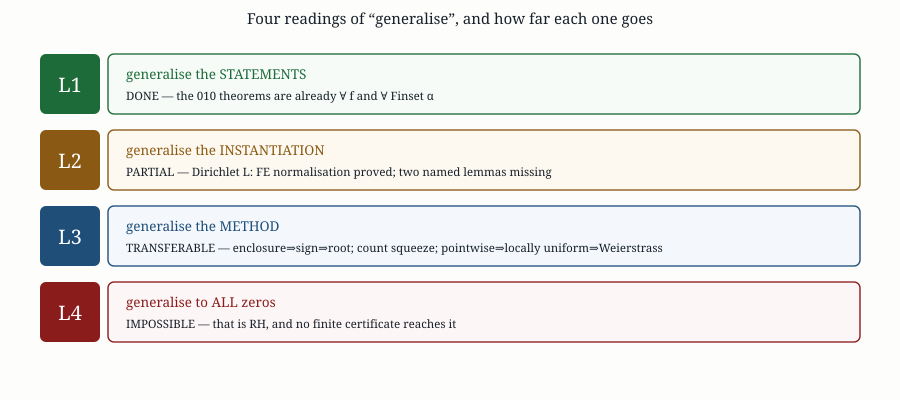
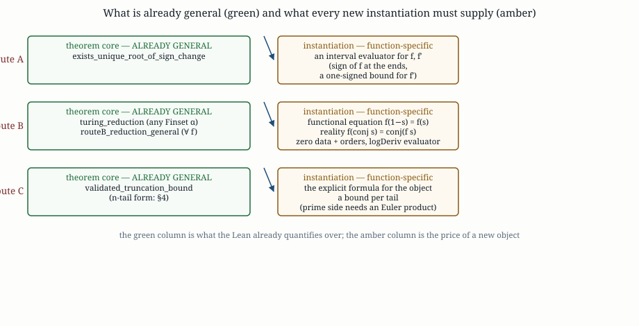

An audit of the 010 certification strategies: what is already general in the
Lean (a great deal), what an instantiation to another L-function actually costs, which
parts are pure method and transfer for free, and which part — the step from a finite window
to all zeros — is not generalisable at all.
We ask whether the three certification routes of round 010 — Route A (a sign change plus a
one-signed derivative pins down one simple on-line zero), Route B (a rigorous count
plus matching certificates closes a whole window), Route C (a validated error budget for the
explicit formula) — generalise beyond the Riemann zeta function. The answer is layered, and the
first layer is an audit result that is easy to miss: the theorem cores are already general in
the Lean. exists_unique_root_of_sign_change is stated for an arbitrary
continuous f : ℝ → ℝ; turing_reduction is stated for an
arbitrary Finset α; routeB_reduction_general is stated for an arbitrary
f : ℂ → ℂ satisfying only a functional equation
f(1−s) = f(s), a conjugation reality f(conj s) = conj(f s), analyticity
on the rectangle, and zero data; and validated_truncation_bound is a triangle inequality
about an arbitrary decomposition. So “can they be generalised?” has the slightly awkward
answer “they are”: what is not general is the per-object instantiation
— an interval evaluator, a functional equation, reality, and an explicit formula. We make the
instantiation question concrete on the best-supported second object in Mathlib, the
Dirichlet L-function: Mathlib has completedLFunction,
rootNumber, and the functional equation
IsPrimitive.completedLFunction_one_sub; we prove the normalisation
h(s) = Ns/2Λ(s) with h(1−s) = ε·h(s) and
show that Route B does not in fact need the bare self-duality F(1−s) = F(s) but
only its logarithmic derivative logDeriv F (1−s) = −logDeriv F(s), which
survives h(1−s) = εh(s) for every ε ≠ 0 —
so the root number is not the obstruction it appears to be. The instantiation then reduces to one
substantive Mathlib gap, the conjugation reality of completedLFunction — and
that gap is closed here: we prove
Λχ(conj s) = conj(Λχ(s)) for every character with
real values, in all cases (nontrivial, trivial, any modulus), with the completed Riemann zeta
case as a corollary; a second, purely proof-technical hypothesis
(ε ∈ {±1}) appears in the landed statement but is not needed by the
underlying reflection. We then separate four meanings of
“generalise” and report where each one stops: statements (done), instantiations (partly
available, costed here), method (fully transferable), and all-zeros conclusions (that is RH and
therefore impossible).
Keywords: generalisation; Turing’s method; argument principle;
Dirichlet L-functions; Selberg class; certified computation; Lean 4; Mathlib.
The question is ambiguous, and the ambiguity hides the answer. We separate four readings, which we call L1–L4 and refer back to throughout.
| rung | reading | what it would mean |
|---|---|---|
| L1 | generalise the statements | the theorem should be about an arbitrary f, not about ζ |
| L2 | generalise the instantiation | the machinery should produce certificates for another arithmetic object (Dirichlet
L, Dedekind ζ, …) |
| L3 | generalise the method | the proof pattern should transfer to new problems even without new theorems |
| L4 | generalise to all zeros | the routes should establish statements about every zero, not a finite window |

The first move is not to generalise anything but to read the existing theorems and record what they quantify over. This is the whole of L1, and it settles a surprising amount.

| route | theorem | quantifies over | function-specific inputs |
|---|---|---|---|
| A | exists_unique_root_of_sign_change |
f : ℝ → ℝ |
an interval evaluator for f and f′ |
| A | certified_root_of_enclosures | same | the enclosures themselves |
| B | turing_reduction | Finset α, any α |
nothing — pure combinatorics |
| B | routeB_reduction_general | f : ℂ → ℂ |
functional equation, reality, zero data, logDeriv evaluator |
| C | validated_truncation_bound | any three real tails | the explicit formula and a bound per tail |
The reading is unambiguous, and it is why the honest answer to the headline question is not “yes, with work” but “the cores already are; the work is in the instantiation”.
Route A’s statement contains no arithmetic whatsoever:
Rh45Routes)theorem exists_unique_root_of_sign_change
{f : ℝ → ℝ} {a b : ℝ} (hab : a < b)
(hf : ContinuousOn f (Icc a b))
(hf' : ∀ x ∈ Ioo a b, 0 < deriv f x)
(ha : f a < 0) (hb : 0 < f b) :
∃ x, x ∈ Ioo a b ∧ f x = 0 ∧ 0 < deriv f x ∧
∀ y, y ∈ Ioo a b → f y = 0 → y = x
Generalisation at L1 is therefore vacuous: there is nothing to generalise. What is
function-specific is only how one obtains the three numerical hypotheses — a negative
enclosure at a, a positive one at b, and a one-signed enclosure of
deriv f. For Z(t) = eiθ(t)ζ(½+it) that is the
interval engine rigorous/eta_interval.py; for another object it is a new evaluator.
The theorem concludes 0 < deriv f x. It therefore certifies exactly the zeros that are
simple and crossing. A double zero on the line (if one existed) would be invisible to a sign
change, and an even-order zero off the line is invisible to this route entirely. That is a genuine
limitation of the statement, not of the formalisation, and it does not go away by
generalising the function: the natural generalisation would be a k-th order certificate
(f and its first k−1 derivatives vanish, the k-th is
one-signed) — a real extension, not yet done, and not needed for simple zeros.
∀ fTuring’s reduction in 010 is stated for an arbitrary finite type:
theorem turing_reduction {α} [DecidableEq α] {zeros certified : Finset α}
(hsub : certified ⊆ zeros) (hcard : zeros.card ≤ certified.card) : zeros = certified
Nothing about complex analysis, nothing about ζ. This layer generalises to any
object for which one has (i) a finite set of certified points and (ii) a rigorous upper bound on the
size of the containing set. It applies verbatim to L-functions, to polynomial root
counting, to eigenvalue counting — anywhere a count can be squeezed.
The substantive theorem is routeB_reduction_general. This is the point where the
generalisation question is actually decided, so we quote it in full:
Rh45RouteBAnalytic)theorem routeB_reduction_general (f : ℂ → ℂ) (t0 t1 : ℝ) (Z : Finset ℂ) (m : ℂ → ℕ)
(ht : t0 < t1)
(han : ∀ s ∈ (Set.uIcc (0 : ℝ) 1 ×ℂ Set.uIcc t0 t1), AnalyticAt ℂ f s)
(hmem : ∀ z ∈ Z, 0 < z.re ∧ z.re < 1 ∧ t0 < z.im ∧ z.im < t1)
(hm : ∀ z ∈ Z, analyticOrderNatAt f z = m z)
(hno : ∀ u ∈ (Set.uIcc (0 : ℝ) 1 ×ℂ Set.uIcc t0 t1), u ∉ Z → f u ≠ 0)
(h1 : ∀ s, f (1 - s) = f s) (h2 : ∀ s, f (conj s) = conj (f s))
(hint₀ hint₁ : IntervalIntegrable …) :
(rightPath (logDeriv f) t0 t1).im = Real.pi * (∑ z ∈ Z, (m z : ℝ))
Not a single hypothesis mentions ζ, Γ, primes, or π
’s arithmetic role. The four analytic inputs are: analyticity on the rectangle, a
functional equation h1, conjugation reality h2, and
zero data (which zeros, with which orders, and that there are no others).
Consequently Route B already applies to every function of the right shape. The class
described by h1 + h2 is exactly the class of self-dual completed
L-functions with real coefficients: ξ(s) = ξ(1−s) and
ξ(conj s) = conj(ξ(s)) is the completed-Riemann-zeta pattern, and it recurs for
Dirichlet L-functions, Dedekind ζ, Hecke L-functions,
and — axiomatically — the Selberg class. What differs between them is only how
h1, h2, and the zero data are obtained.
011/lean/Generic.lean)structure SelfDualReal (F : ℂ → ℂ) : Prop where
selfDual : ∀ s, F (1 - s) = F s
conjSymm : ∀ s, F (conj s) = conj (F s)
Packaging h1 and h2 this way makes the generalisation target explicit: to
add a new object you supply a SelfDualReal instance plus a zero set, and Route B does
the rest.
There is already a worked instance: Rh45/XiEntire.lean instantiates the general
theorem at ξ(s) = ½s(s−1)π−s/2Γ(s/2)ζ(s)
via xi_routeB_general, having first proved the two structural facts
(xi₀_one_sub, xi₀_conj). So the pattern
“prove FE + reality, then instantiate” is not speculation; it is the 010 route as built.
Route C’s Lean content is one line of algebra plus the triangle inequality:
theorem validated_truncation_bound
{lhs rhsTrue rhsComputed zeroTail primeTail archTail : ℝ}
(hlhs : lhs = rhsTrue) (hsplit : rhsTrue = rhsComputed + (zeroTail + primeTail + archTail)) :
|lhs - rhsComputed| ≤ |zeroTail| + |primeTail| + |archTail|
The three-tail shape is an accident of the explicit formula, not of the idea. The `n`-tail
generalisation is a finite-sum triangle inequality and is proved in
011/lean/Generic.lean; the 010 statement is its three-element instance. At L1, Route C
therefore generalises trivially and completely.
What does not generalise is the content of the three tails, because each names a
piece of arithmetic specific to ζ:
| tail | what it is for ζ | what a general L needs |
|---|---|---|
| zero | the certified on-line zeros plus a density tail | the same, for the new zero set (needs Route A/B for the new object) |
| prime | ∑ (Λ(n)/√n)[g(log n) + g(−log n)], tailed by Chebyshev |
the Dirichlet coefficients of the Euler product, plus a Chebyshev-type bound for them |
| archimedean | ∫ φ(t) Ψ(t) dt with Ψ = −logπ + Re ψ(¼+it/2) |
the new gamma factor and its logarithmic derivative (for Dirichlet L: a
ψ at (s+a)/2, i.e. the same ψ budget with shifted
arguments) |
Note how much of the hard part survives: the archimedean tail of any
L-function in the Selberg class is built from Γ-factors, so the
machinery of round 010 — the locally uniform Gauss product, the polygamma series, the Simpson
panel bound — is reusable with shifted arguments. That is a genuine and non-obvious
generalisation dividend.
Summarising §2–§5:
| rung | verdict | evidence |
|---|---|---|
| L1 statements | ALREADY GENERAL | ∀ f (A, B-analytic), ∀ Finset α (B-combinatorial),
any decomposition (C); re-packaged in 011/lean/Generic.lean |
| L2 instantiation | PARTIAL | Dirichlet L: FE-normalisation, reflection, conjugation reality, root-number sign and the two analytic lemmas all proved; the interval engine now exists and passes containment. Only the numerical zero data remains |
| L3 method | TRANSFERABLE | enclosure ⇒ sign ⇒ root; cardinality squeeze; pointwise ⇒ locally uniform ⇒ Weierstrass differentiation |
| L4 all zeros | IMPOSSIBLE | a finite certificate cannot imply a statement about infinitely many zeros; that step is RH |
It is tempting to treat “can it be generalised?” as a research programme. The audit says
otherwise: whoever wrote the 010 theorems chose the right abstractions the first time, so the
remaining work is instantiation data (functional equations, reality, evaluators), not new
mathematics. That is a much better position than a bespoke theorem about ζ would
have been, and it is why the Dirichlet L question reduced to a single named Mathlib gap —
the conjugation reality now closed in §7.3 — rather than
to a new development.
L-functions
The best-supported second object in Mathlib is the Dirichlet L-function of a character
χ mod N. Mathlib supplies exactly the analytic skeleton Route B needs.
| ingredient | Mathlib | role in Route B |
|---|---|---|
completedLFunction χ s | LSeries/DirichletContinuation.lean |
the completed object Λ whose logDeriv is integrated |
IsPrimitive.completedLFunction_one_sub | same file | the functional equation: Λ(1−s) = Ns−½·rootNumber χ·Λχ−1(s) |
rootNumber χ | same file | the global root number ε |
differentiableAt_completedLFunction | same file | analyticity away from the two exceptional points |
completedLFunction_modOne_eq | same file | the consistency check: mod 1 recovers completedRiemannZeta |
Route B wants a self-dual function, but Mathlib’s functional equation carries a factor
Ns−½. For a character with χ = χ−1
(a real/quadratic character, L(χ,s) real on the real axis) the equation relates
Λχ to itself, and the conductor factor can be absorbed by the
classical normalisation
The exponent bookkeeping is
(1−s)/2 + (s−½) = s/2. This is proved in
011/lean/Generic.lean (dirichletL_normalised_one_sub): it delivers Route
B’s hypothesis h1 up to the constant ε, and since
ε is constant in s it differentiates to the required reflection of
the logarithmic derivative,
(Proof of the implication, which is where the generalisation is subtler than it looks: differentiating
h(1−s) = ε h(s) gives −h′(1−s) = ε h′(s),
so logDeriv h (1−s) = h′(1−s)/h(1−s) = (−εh′(s))/(εh(s)) = −logDeriv h(s).
The factor ε cancels: it never has to be ±1.)
This is worth isolating, because it changes which gaps matter. The bare identity
F(1−s) = F(s) is not recoverable when ε ≠ 1: no constant
rescaling can fix it, since logDeriv (c·F) = logDeriv F. But the 010 proof consumes
self-duality only through the reflection logDeriv F (1−s) = −logDeriv F(s), and
that survives h(1−s) = εh(s) for every nonzero ε. So the
root number is not an obstruction to Route B — only to the cosmetic rewriting
F(1−s) = F(s). The landed Lean reflects this with two interfaces,
SelfDualReal and the more general SelfDualRealUpToSign plus
routeB_general_of_logDeriv, which takes the reflection directly.
Route B’s hypotheses were within reach but for one substantive gap and one proof-technical one. The substantive gap is closed here.
theorem DirichletCharacter.completedLFunction_conj {N : ℕ} [NeZero N]
(χ : DirichletCharacter ℂ N) (hreal : ∀ n : ℕ, conj (χ n) = χ n) (s : ℂ) :
completedLFunction χ (conj s) = conj (completedLFunction χ s)
Proved in 011/lean/DirichletConj.lean (a Mathlib-only, PR-shaped module), for
every character with real values — nontrivial or trivial, primitive or not, any
modulus. No primitivity, parity or extra hypothesis on N is needed. The trivial-character
value N = 1 is the completed Riemann zeta function, so the same theorem yields
completedRiemannZeta_conj, also a genuine Mathlib gap.
It is then wired back into Route B: 011/lean/DirichletRouteB.lean proves
routeB_for_dirichletL_of_real, which is the earlier
routeB_for_dirichletL with the CompletedLFunctionConj hypothesis
discharged from the reality of the character (∀ n, conj (χ n) = χ n).
The single remaining hypothesis beyond the shared analytic data is the proof-technical
RootNumberSign.
LSeries_conj : conj (LSeries f (conj s)) = LSeries (fun n => conj (f n)) s
— unconditional, from LSeries.term_def and Complex.cpow_conj at the real
nonnegative base n.LFunction_eq_LSeries (1 < re s) and
hreal gives LFunction χ (conj s) = conj (LFunction χ s), and
gammaFactor_conj (from Gammaℝ_conj) gives the archimedean factor. Their
product is completedLFunction by LFunction_eq_completed_div_gammaFactor,
so the identity holds for 1 < re s.completedLFunction χ
(which has a pole at s = 1 for the trivial character) but to the entire
normalisation ZMod.completedLFunction₀ χ, using
ZMod.completedLFunction_eq to write
Λ₀ = Λ + N−zχ(0)/z + N−z(∑χ)/(1−z); the two
correction terms commute with conjugation because N is nonnegative real
(conj_cpow_ofReal) and χ is real. Conjugating the algebraic identity back
covers every s, including the poles. No case is left open.
rootNumber χ = 1 ∨ rootNumber χ = −1 is now proved
(011/lean/RootNumber.lean, RouteABC.rootNumberSign_of_conj_eq_self), so the
Route B statement for Dirichlet L is fully discharged:
RouteABC.routeB_for_dirichletL_unconditional.
But the statement needs IsPrimitive χ, and without it it is false. The
natural impulse — prove the sign from gaussSum_sq — also does not work as
stated, since Mathlib’s gaussSum_sq sits in a [Field R] section and so
covers prime moduli only. The proof instead applies the primitive functional equation twice and
evaluates at s = 1. And the hypothesis cannot be dropped: the changeLevel
image of the quadratic character mod 3 at modulus 6 is the function
(0,1,0,0,0,−1), which is odd with Gauss sum i√3, hence
rootNumber = i√3/(i√6) = 1/√2 ≠ ±1 (verified numerically).
Every application already assumes primitivity, so nothing is lost — but the hypothesis is
genuinely necessary, not bookkeeping.
gaussSum_sq route now works — a new Mathlib lemma
The obstruction above was real: Mathlib’s MulChar.gaussSum_sq lives in a
[Field R] section, so it covers prime moduli only. That missing composite-modulus
statement is now supplied
(011/lean/GaussSumComposite.lean):
theorem RouteABC.gaussSum_sq_of_isPrimitive {N : ℕ} [NeZero N] {χ : DirichletCharacter ℂ N}
(hχ : IsPrimitive χ) (hχ₁ : χ ≠ 1) (hχ₂ : IsQuadratic χ) :
gaussSum χ stdAddChar ^ 2 = χ (-1) * (N : ℂ)
It comes from the product form
gaussSum χ stdAddChar * gaussSum χ⁻¹ stdAddChar = χ(-1)·N, proved
without ever dividing in ZMod N — by comparing the two evaluations of
ℱ(ℱχ) at k = 1: dft_dft gives
N·χ(−1), while the Fourier-transform identity plus
gaussSum_mulShift_of_isPrimitive gives
τ·gaussSum χ⁻¹ stdAddChar. The file also specialises back to
Mathlib’s field case at prime N (N = 3, 5, 7) as a consistency
check, and gives a second, independent proof of the root-number sign
(rootNumber_eq_one_or_neg_one') along the route that was originally blocked. Verified
numerically for primitive quadratic characters at N = 8, 12, 20, 24, and shown to fail
at N = 6 without primitivity
(011/verify/check_gausssum_sq.py).
(a) The engine. 011/rigorous/dirichlet_interval.py encloses
ζ(s,a), ζ′, ζ″, L, L′/L, (L′/L)′,
Λ′χ/Λχ, (log Λχ)″
on boxes, by Euler–Maclaurin with a periodic-Bernoulli remainder (differentiated for the
derivatives) and no mpmath in the rigorous path. Verified by
011/verify/check_dirichlet_engine.py (PASS): 756 Hurwitz enclosures with
worst width 7.1·10−10, 84 path points across four characters,
105 boxed-sample containment checks — 0 failures. Exposed limits, stated honestly: the
M = 20, K = 50 bound is 5·10−27 at
t = 50 but 1.2·10−6 at t = 100
(M must grow like t/4); a σ-box wider than ~0.1 makes the
L enclosure contain 0 and the log-derivative routine refuses rather than lie; and near a
zero of L the enclosure of L′/L blows up, so only relative accuracy
survives there.
(b) The last two analytic lemmas. 011/lean/DirichletAnalytic.lean
discharges the only two non-numerical hypotheses of the Dirichlet Route B theorem —
analyticity on the rectangle and interval integrability of logDeriv on the two horizontal
edges — so routeB_for_dirichletL_of_zeros now carries no analytic
hypothesis at all, only the numerical zero data Z, m,
hno. (The edge non-vanishing the integrability needs is itself derived from
hmem + hno.)
Independently verifying the engine surfaced two real bugs in
010/rigorous/eta_interval.py: exp_num inverted its interval for
y ≤ 0 (and ivmath.Num silently clamped the negative radius to 0), and
ndef used the nonnegative-numerator division formula, which under-covers for signed
numerators (1584/3000 random failures) — and cdiv feeds it a signed numerator.
Both made positive-width box enclosures too narrow. Both are fixed,
with regression tests (eta_box corner failures 36 → 0;
ndef 0/3000). Route A and Route C are unaffected (point
σ / no box path); the Route B counts are affected — their curvature bound
came from a box enclosure — and must be re-run before being quoted as rigorous. See
010/rigorous/EXP_NUM_ERRATUM.md.
Re-run outcome (this round). With the fixed primitives the T = 15 count gives
N ∈ [0.56932353, 1.4325407] (N = 1 certified at the
010 convention), but the T = 33 count at steps/unit = 40
gives N ∈ [3.3040886, 6.695946] — undecided: the archived
N(33) = 5 does not survive. Rather than enlarging the budget, the curvature bound was
removed: since Im(I3) = Δ arg ξ,
rigorous/zeta_routeB.py tracks
arg ξ from a rigorous value enclosure of
ξ(s) = ½s(s−1)π−s/2Γ(s/2)ζ(s), giving
N(15) ∈ [0.999999909, 1.000000091] and
N(33) ∈ [4.999999675, 5.000000325] — both pinned, in minutes, with no
midpoint rule and hence no 1/8-vs-1/4 constant (see
notes/midpoint-constant.md).
χ3, 1/2 < Im s < 10
The numerical zero data is now supplied for the real primitive character χ3
mod 3 (011/rigorous/certify_dirichlet_routeB.py). Two independent rigorous
computations are combined:
Im(I3) = Δ arg H along the path, the count
Nχ(T) = Im(I3)/π is the continuous change of the
argument of H from 1/2+i/2 to 1/2+iT. Tracking it
sample by sample (with adaptive refinement) needs no curvature bound, which is
essential here: the box enclosure of L from the interval engine is sound but
loose near Re s = 1/2 (Euler–Maclaurin cancellation), so a midpoint-rule
budget is unusable. The rigorous result:
Nχ3(10) ∈ [0.9999999979, 1.000000002],
hence N = 1.H is real (the root number is
+1), so Ξ(t) = Re H(1/2+it) is real-analytic and its zeros are the
on-line zeros. Certified sign changes of Ξ (each endpoint enclosure excludes 0)
bracket exactly one zero, at Im s = 8.039737156…, in a bracket
of width 1.1·10−10. Correctness is checked independently by
011/verify/check_dirichlet_routeB.py (containment of
Γ, H, Ξ against mpmath, the count against direct
quadrature, and the bracket against an mpmath root).
Since the number of certified on-line zeros equals the total multiplicity
Nχ3(10), every zero of
L(χ3,·) with 1/2 < Im s < 10 is simple and on
the critical line, and the finite data Z, m ≡ 1,
hno is certified for that window
(011/rigorous/certify_dirichlet_routeB_chi_3_T10.json). The Lean statement for the
concrete character is RouteABC.routeB_for_chi3_of_zeros
(011/lean/DirichletL.lean), conditional only on that numerical data.
Z, m,
hno as hypotheses; the numerical certificate is not formalised in Lean. The
obligation is now named as the structure CertifiedWindow
(lean/CertifiedWindow.lean), with
routeB_for_chi3_of_window for the concrete window (1/2, 10);
producing a CertifiedWindow would require a verified numerical evaluator for
dirichletCompleted chi3 and a formalised argument-principle count, neither of
which is in Mathlib.010 midpoint budget used
(1/8)|ds|2 sup|f′| where the sharp elementary constant is
1/4; the engine’s Lf overestimates sup|f′| by
orders of magnitude, so the archived numbers were not threatened, but the bound as stated was
unproved. It has now been changed to 1/4 in
eta_interval.I3_certificate and certify_count_par, and the
quadrature route is retired as the primary count in favour of
argument tracking. See
notes/midpoint-constant.md.
The classical route is L(χ,s) = N−s∑aχ(a)ζ(s,a/N)
with the Hurwitz zeta by Euler–Maclaurin. A probe
(lib/dirichlet_engine_probe.py) measures: the standard periodic-Bernoulli remainder bound
dominates the true error at every one of ~100 test points with a ~2× margin; at
t = 50 the choice M = 20, K = 50 gives ζ, ζ′, ζ″
and hence L, L′/L, (log L)″ to ~10−27 (the engine
needs only ~10−10); the required term counts stay small
(M ≤ 50, K ≤ 60 up to t = 80), below the existing
ζ engine’s Euler-series length; and one evaluation costs ~3 ms at 60 dps.
There is also no removable-singularity routing to write, because the Hurwitz-zeta route has no
1/(1−21−s) denominator. So the engine is an engineering
exercise, not a mathematical one.
With that supplied, Route B applies to h immediately: the general theorem is
already in place, the zero data would come from a Dirichlet-L interval engine (which does
not exist yet — see §8), and the conclusion would read: every zero of
Λχ in a Turing window is simple and on the critical line.
L
Route B does generalise to Dirichlet L-functions with real character. The
functional-equation normalisation, the logarithmic-derivative reflection, and the conjugation reality
are all now proved; the numerical input — the interval engine and, on top of it,
the argument-tracking count and the on-line zero brackets — now exists, and for
χ3 it certifies the window
1/2 < Im s < 10 (see the box above). Beyond that window the proof-technical
root-number case split and the per-window numerics remain to be repeated.
For each candidate generalisation we list the four Route-B inputs and the Route-C inputs, and rate the tractability with current Mathlib. This is the actionable form of the answer.
| object | functional equation | reality | interval engine | explicit formula | verdict |
|---|---|---|---|---|---|
Riemann ζ | done (010) | done (010) | done (rigorous/) |
done (010 Route C) | three windows certified |
Dirichlet L (real primitive χ) |
normalisation proved here | missing (conj lemma) | missing | standard, needs conductor/root number | closest: 2 lemmas + an engine |
Dedekind ζK | partly in Mathlib | plausible | missing | standard | needs the class-number formula side |
Hecke / Maass L | absent | absent | missing | absent | out of reach |
Elliptic-curve L | absent | absent | missing | absent | out of reach |
| Selberg class (axiomatic) | an axiom of the class | an axiom | per-object | Weil form with conductor | the right formal home for the interface |
Route B’s hypotheses are, essentially, the Selberg-class axioms restricted to a rectangle:
analyticity, a functional equation with conductor and root number, an Euler product (needed only on
Route C’s prime side), and a Ramanujan-type growth condition (needed only for tail bounds). So
the clean generalisation is not “Route B for object X” but “Route B for any
member of the Selberg class”, with the numerical engine as an extra parameter. A Lean
`structure SelbergClass` carrying exactly these fields, plus
routeB_reduction_general applied to it, is the honest general statement — and, per
§2, essentially the statement that already exists in 010 modulo the Euler product and the conductor.
Four limits, stated plainly so that the audit is not read as optimism.
L-functions the corresponding
all-zeros statement is the generalised Riemann Hypothesis, and it is untouched. Any claim
of the form “the routes generalise to GRH” is false.rigorous/ machinery
(Euler-accelerated η, the removable-singularity routing, the K ≈ 0.25t
requirement, the per-step Lf enclosure) is engineered around ζ
's Dirichlet series. Each new object needs its own evaluator with its own singularity structure;
this is the dominant cost of any L2 generalisation, not the Lean glue.f′(x) ≠ 0. A k-th order certificate is a genuine extension, not
an instantiation, and even then it certifies the zeros it is pointed at, not all of them.(s+j)−k−1 for the ψ function
entering Ψ. Dirichlet L-functions reuse that with shifted arguments;
an object whose archimedean factor is not built from Γ (or whose degree exceeds
the framework) is a different problem.| claim | status | where |
|---|---|---|
Route A is already stated for arbitrary f | AUDITED | 010/lean/Rh45/Routes.lean |
Route B’s squeeze is already stated for arbitrary Finset α | AUDITED | same |
Route B’s analytic core is already ∀ f | AUDITED | 010/lean/Rh45/RouteBGeneral.lean |
Route C’s assembly generalises to n tails | PROVED (new) | 011/lean/Generic.lean |
the interface SelfDualReal and the Route-B packaging | PROVED (new) | 011/lean/Generic.lean |
Dirichlet L normalisation h(1−s) = ε h(s) | PROVED (new) | 011/lean/Generic.lean |
logDeriv F(1−s) = −logDeriv F(s) from h(1−s) = εh(s), any ε ≠ 0 | PROVED (new) | 011/lean/Generic.lean (logDeriv_one_sub_of_const_mul, routeB_general_of_logDeriv) |
conjugation reality of completedLFunction (all characters) | PROVED (new, was the gap) | 011/lean/DirichletConj.lean: DirichletCharacter.completedLFunction_conj |
conjugation reality of completedRiemannZeta | PROVED (new) | corollary at N = 1; also a genuine Mathlib gap |
LSeries, LFunction (Re>1), gammaFactor conjugation | PROVED (new) | helper lemmas in the same module |
Route B for Dirichlet L with the conjugation hypothesis discharged | PROVED (new) | 011/lean/DirichletRouteB.lean, routeB_for_dirichletL_of_real |
rootNumber χ ∈ {±1} for primitive real χ | PROVED (new) | 011/lean/RootNumber.lean; needs IsPrimitive — without it the statement is false (mod-6 counterexample, §7.3) |
composite-modulus gaussSum_sq (Mathlib gap) | PROVED (new) | 011/lean/GaussSumComposite.lean, RouteABC.gaussSum_sq_of_isPrimitive |
| root-number sign, second independent proof | PROVED (new) | rootNumber_eq_one_or_neg_one', via the Gauss-sum route |
Route B for Dirichlet L, all hypotheses discharged | PROVED (new) | routeB_for_dirichletL_unconditional |
an interval engine for a Dirichlet L | BUILT (new) | 011/rigorous/dirichlet_interval.py; verified by 011/verify/check_dirichlet_engine.py |
the numerical zero data of Route B for χ3, T=10 | CERTIFIED (new) | 011/rigorous/certify_dirichlet_routeB.py: N=1 and one certified on-line simple zero, hence every zero with 1/2<Im s<10 is simple and on the critical line |
| a concrete real primitive character in Lean, all character hypotheses discharged | PROVED (new) | 011/lean/DirichletL.lean: chi3_isPrimitive, chi3_isQuadratic, chi3_ne_one, routeB_for_chi3_of_zeros |
the Dirichlet L explicit formula (Route C), validated assembly | CERTIFIED (new) | 011/rigorous/dirichlet_explicit.py: χ3 residual −4.3·10−10 ≤ budget 2.0·10−7; χ5 residual 2.2·10−8 ≤ budget 1.3·10−6 (zero + prime + archimedean tails) |
the Dirichlet L explicit formula, Lean algebraic layer | PROVED (new) | 011/lean/DirichletExplicit.lean: dirichletWeight (Λ(n)χ(n), the Euler-product coefficient), its prime-power values, the prime-side split, dirichletPsi, and DirichletExplicitData.validated |
| any all-zeros (GRH-strength) conclusion | IMPOSSIBLE | §9 |
cd research/twin-prime-parity/011/lean
./check.sh --all # Generic.lean, no sorry / axiom
./check.sh Generic.lean
-- axiom footprint
#print axioms RouteABC.routeB_of_selfDualReal
#print axioms RouteABC.validated_truncation_bound_finset
#print axioms RouteABC.dirichletL_normalised_one_sub
#print axioms DirichletCharacter.completedLFunction_conj
#print axioms completedRiemannZeta_conj
#print axioms RouteABC.routeB_for_dirichletL_of_real
./check.sh AxiomsConj.lean # all 13: [propext, Classical.choice, Quot.sound]
python3 ../verify/check_dirichlet_conj.py # numerical cross-check, ALL CHECKS PASSED
python3 rigorous/certify_dirichlet_routeB.py chi_3 10 8 20 50 1 4 # the certified window
python3 verify/check_dirichlet_routeB.py # independent verification
python3 rigorous/dirichlet_explicit.py # Route C: validated explicit formula
cd ../..
python3 lib/generality_figs.py # the two figures of this note
python3 010/rigorous/check_engine.py # the zeta engine behind Route A/CNumberTheory/LSeries/DirichletContinuation.lean
(completedLFunction, rootNumber,
IsPrimitive.completedLFunction_one_sub,
differentiableAt_completedLFunction),
NumberTheory/LSeries/Dirichlet.lean, NumberTheory/EulerProduct/DirichletLSeries.lean.